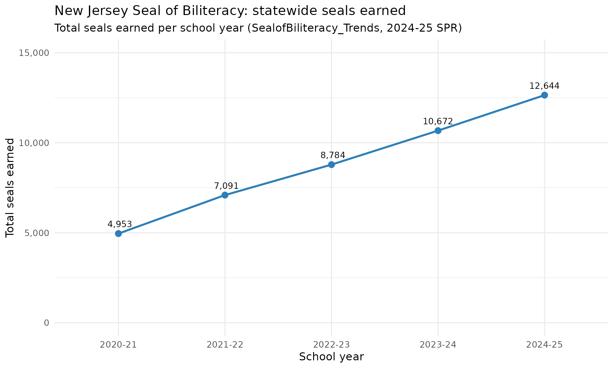
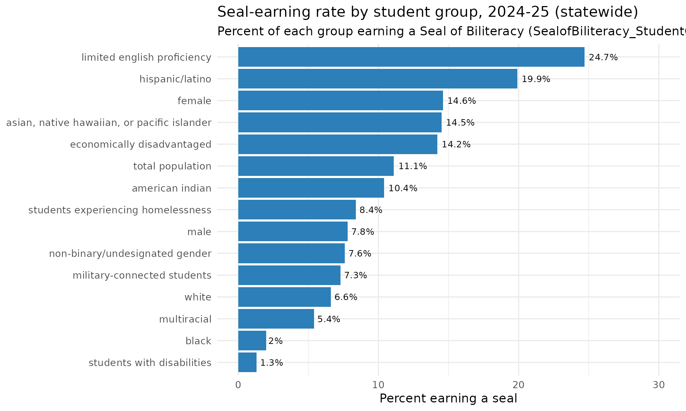

Seal of Biliteracy: Statewide Trend & the Seal-Earning Equity Gap
Source:vignettes/nj-biliteracy.Rmd
nj-biliteracy.RmdThe New Jersey State Seal of Biliteracy recognizes graduating
students who reach proficiency in English and at least one world
language. The 2024-25 School Performance Reports split this into a
richer set of views: a school/district/state summary
(fetch_biliteracy_summary()), a five-year
trend (fetch_biliteracy_trends()), and a
seal-earning rate by student group
(fetch_biliteracy_by_group()). All three are new in the
2024-25 redesign and cover end_year 2025 only; the per-language detail
(2018-2025) stays in fetch_biliteracy_seal().
Throughout, suppressed cells ("Fewer than 5 seals",
"Enrollment for the group is <10 students.") are
returned as NA, never a guessed number. A real published
0 stays 0.
Statewide seals more than doubled in four years
The trend sheet is unusual: it carries five school years inside the single 2025 workbook. The statewide row shows seals earned climbing from about 4,950 in 2020-21 to 12,644 in 2024-25.
state_trend <- fetch_biliteracy_trends(2025, level = "district") %>%
filter(is_state) %>%
select(school_year, total_seals_earned) %>%
arrange(school_year)
# Print-before-plot: confirm the data feeding the chart.
state_trend
#> # A tibble: 5 × 2
#> school_year total_seals_earned
#> <chr> <dbl>
#> 1 2020-21 4953
#> 2 2021-22 7091
#> 3 2022-23 8784
#> 4 2023-24 10672
#> 5 2024-25 12644
stopifnot(nrow(state_trend) == 5)
ggplot(state_trend, aes(x = school_year, y = total_seals_earned, group = 1)) +
geom_line(colour = "#2c7fb8", linewidth = 1.1) +
geom_point(size = 3, colour = "#2c7fb8") +
geom_text(aes(label = format(total_seals_earned, big.mark = ",")),
vjust = -1, size = 3.6) +
scale_y_continuous(limits = c(0, 15000),
labels = function(x) format(x, big.mark = ",")) +
labs(
title = "New Jersey Seal of Biliteracy: statewide seals earned",
subtitle = "Total seals earned per school year (SealofBiliteracy_Trends, 2024-25 SPR)",
x = "School year",
y = "Total seals earned"
) +
theme_minimal(base_size = 13)
English learners earn seals at the highest rate
The student-group view reframes the seal as an equity measure.
Because the seal rewards proficiency in a language other than English,
the groups earning it at the highest rates are exactly the students who
arrive multilingual: current and former English learners lead at about
25%, with Hispanic/Latino students next. Students with disabilities and
Black students earn seals at the lowest rates. The statewide rate for
each group is carried in the
students_earning_seal_pct_state column.
group_rates <- fetch_biliteracy_by_group(2025, level = "district") %>%
filter(!is.na(students_earning_seal_pct_state)) %>%
distinct(subgroup, students_earning_seal_pct_state)
# Print-before-plot: confirm the values exist and are sane.
group_rates <- group_rates %>%
arrange(desc(students_earning_seal_pct_state))
group_rates
#> # A tibble: 15 × 2
#> subgroup students_earning_seal_pct_state
#> <chr> <dbl>
#> 1 limited english proficiency 24.7
#> 2 hispanic/latino 19.9
#> 3 female 14.6
#> 4 asian, native hawaiian, or pacific islander 14.5
#> 5 economically disadvantaged 14.2
#> 6 total population 11.1
#> 7 american indian 10.4
#> 8 students experiencing homelessness 8.4
#> 9 male 7.8
#> 10 non-binary/undesignated gender 7.6
#> 11 military-connected students 7.3
#> 12 white 6.6
#> 13 multiracial 5.4
#> 14 black 2
#> 15 students with disabilities 1.3
stopifnot(nrow(group_rates) > 0)
stopifnot("limited english proficiency" %in% group_rates$subgroup)
ggplot(
group_rates,
aes(x = reorder(subgroup, students_earning_seal_pct_state),
y = students_earning_seal_pct_state)
) +
geom_col(fill = "#2c7fb8") +
geom_text(aes(label = paste0(students_earning_seal_pct_state, "%")),
hjust = -0.15, size = 3.4) +
coord_flip() +
scale_y_continuous(limits = c(0, 30)) +
labs(
title = "Seal-earning rate by student group, 2024-25 (statewide)",
subtitle = "Percent of each group earning a Seal of Biliteracy (SealofBiliteracy_StudentGroup)",
x = NULL,
y = "Percent earning a seal"
) +
theme_minimal(base_size = 13)
Summary view: seals, languages, and unique earners
The summary sheet pairs each entity’s seal count with the number of distinct languages and the count and share of unique students earning a seal. Here are the districts producing the most seals statewide.
summary25 <- fetch_biliteracy_summary(2025, level = "district") %>%
filter(is_district, !is.na(total_seals_earned))
nrow(summary25)
#> [1] 294
stopifnot(nrow(summary25) > 0)
summary25 %>%
arrange(desc(total_seals_earned)) %>%
slice(1:10) %>%
select(district_name, total_seals_earned, numberof_languages,
unique_students_earning_seals, unique_students_earning_seals_pct)
#> # A tibble: 10 × 5
#> district_name total_seals_earned numberof_languages unique_students_earn…¹
#> <chr> <dbl> <dbl> <dbl>
#> 1 Newark Public S… 460 4 449
#> 2 Elizabeth Publi… 373 5 368
#> 3 Perth Amboy Pub… 326 5 325
#> 4 Passaic City Sc… 266 1 266
#> 5 Clifton Public … 214 13 207
#> 6 Freehold Region… 209 14 200
#> 7 Northern Valley… 197 12 193
#> 8 Jersey City Pub… 190 15 188
#> 9 Union City Scho… 180 5 175
#> 10 Kearny 162 8 153
#> # ℹ abbreviated name: ¹unique_students_earning_seals
#> # ℹ 1 more variable: unique_students_earning_seals_pct <dbl>Notes
- All three fetchers cover end_year 2025 only (the
2024-25 SPR redesign sheets
SealofBiliteracy_Summary,_Trends,_StudentGroup). For the per-language detail across 2018-2025 usefetch_biliteracy_seal(). - Suppression and text-bleed strings become
NA, never a fabricated number. A genuine published0is preserved. - A handful of small high schools publish a seal-earning rate above 100% for a group (the rate is seals earned over a 12th-grade-style denominator, not over the group’s own enrollment); those real cells pass through unclipped.
sessionInfo()
#> R version 4.6.1 (2026-06-24)
#> Platform: x86_64-pc-linux-gnu
#> Running under: Ubuntu 24.04.4 LTS
#>
#> Matrix products: default
#> BLAS: /usr/lib/x86_64-linux-gnu/openblas-pthread/libblas.so.3
#> LAPACK: /usr/lib/x86_64-linux-gnu/openblas-pthread/libopenblasp-r0.3.26.so; LAPACK version 3.12.0
#>
#> locale:
#> [1] LC_CTYPE=C.UTF-8 LC_NUMERIC=C LC_TIME=C.UTF-8
#> [4] LC_COLLATE=C.UTF-8 LC_MONETARY=C.UTF-8 LC_MESSAGES=C.UTF-8
#> [7] LC_PAPER=C.UTF-8 LC_NAME=C LC_ADDRESS=C
#> [10] LC_TELEPHONE=C LC_MEASUREMENT=C.UTF-8 LC_IDENTIFICATION=C
#>
#> time zone: UTC
#> tzcode source: system (glibc)
#>
#> attached base packages:
#> [1] stats graphics grDevices utils datasets methods base
#>
#> other attached packages:
#> [1] ggplot2_4.0.3 dplyr_1.2.1 njschooldata_0.9.25
#>
#> loaded via a namespace (and not attached):
#> [1] utf8_1.2.6 sass_0.4.10 generics_0.1.4 tidyr_1.3.2
#> [5] stringi_1.8.7 hms_1.1.4 digest_0.6.39 magrittr_2.0.5
#> [9] evaluate_1.0.5 grid_4.6.1 timechange_0.4.0 RColorBrewer_1.1-3
#> [13] fastmap_1.2.0 cellranger_1.1.0 jsonlite_2.0.0 purrr_1.2.2
#> [17] scales_1.4.0 codetools_0.2-20 textshaping_1.0.5 jquerylib_0.1.4
#> [21] cli_3.6.6 rlang_1.2.0 withr_3.0.3 cachem_1.1.0
#> [25] yaml_2.3.12 otel_0.2.0 tools_4.6.1 tzdb_0.5.0
#> [29] vctrs_0.7.3 R6_2.6.1 lifecycle_1.0.5 lubridate_1.9.5
#> [33] snakecase_0.11.1 stringr_1.6.0 fs_2.1.0 ragg_1.5.2
#> [37] janitor_2.2.1 pkgconfig_2.0.3 desc_1.4.3 pkgdown_2.2.0
#> [41] pillar_1.11.1 bslib_0.11.0 gtable_0.3.6 glue_1.8.1
#> [45] systemfonts_1.3.2 xfun_0.59 tibble_3.3.1 tidyselect_1.2.1
#> [49] knitr_1.51 farver_2.1.2 htmltools_0.5.9 labeling_0.4.3
#> [53] rmarkdown_2.31 readr_2.2.0 compiler_4.6.1 S7_0.2.2
#> [57] readxl_1.5.0